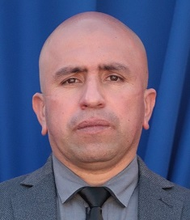

AlcaldeJorge Elías Jil Herrerajorgejil@olmue.cl
Independiente
Teléfono: +56 44 357 9535
Independiente
Teléfono: +56 44 357 9535
Las Municipalidades son las responsables de la administración del Gobierno Comunal. Son corporaciones autónomas de derecho público, con personalidad jurídica y patrimonio propio. Su máxima autoridad es el alcalde.
Su misión es satisfacer las necesidades de la comunidad local y asegurar su participación en el progreso económico, social y cultural de la comuna. Complementa esta labor el Consejo Municipal, encargado de fiscalizar la gestión municipal (compuestos por 6 concejales) y el Consejo Económico y Social (integrado por organizaciones comunales).

Para consultar información o contactar al Consejo Municipal, puedes utilizar los canales de atención de la Municipalidad.
Ir a ContactosAutoridades, organización y áreas de trabajo de la Municipalidad de Olmué.
Conoce cómo se organiza el municipio y la relación entre sus distintas áreas.
Ver estructura municipalEncuentra las áreas de trabajo municipal y la información para orientar tu consulta.
Consultar departamentosAccede a documentos institucionales y a la información pública de la Municipalidad de Olmué.
Ley de TransparenciaComunícate con la municipalidad a través de sus canales oficiales.
Prat #12, Olmué, 5ta Región
Lunes a Jueves de 08:30 a 17:30 y Viernes de 08:30 a 16:30